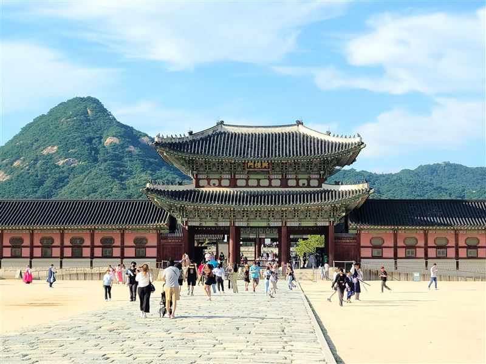
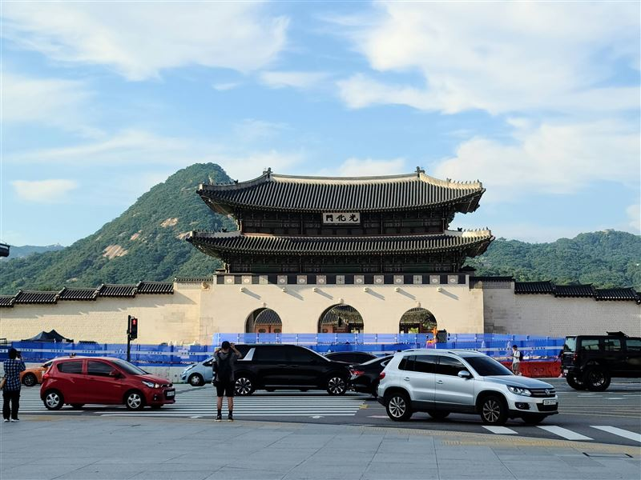
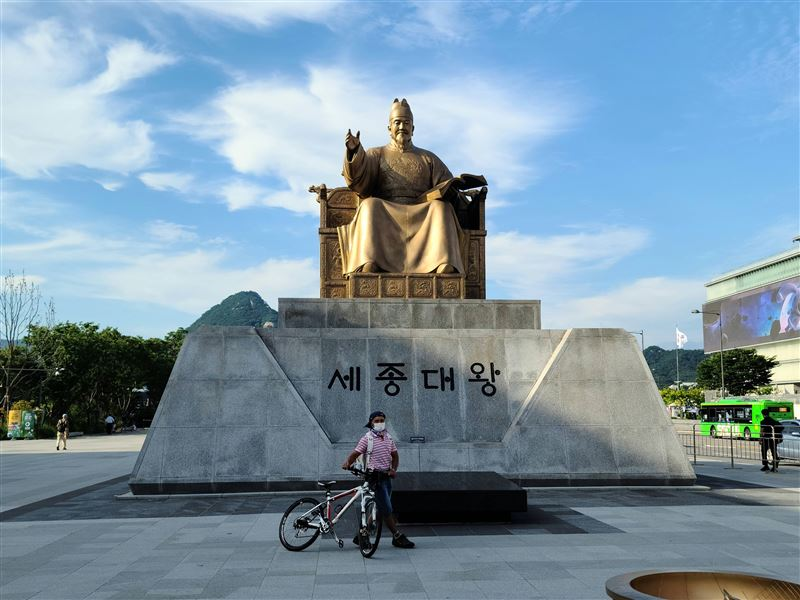
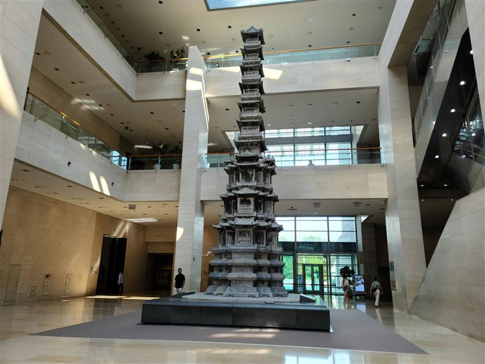
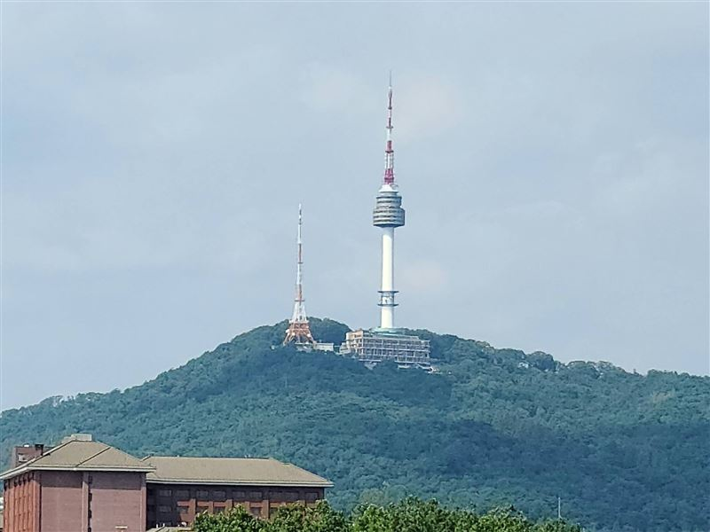
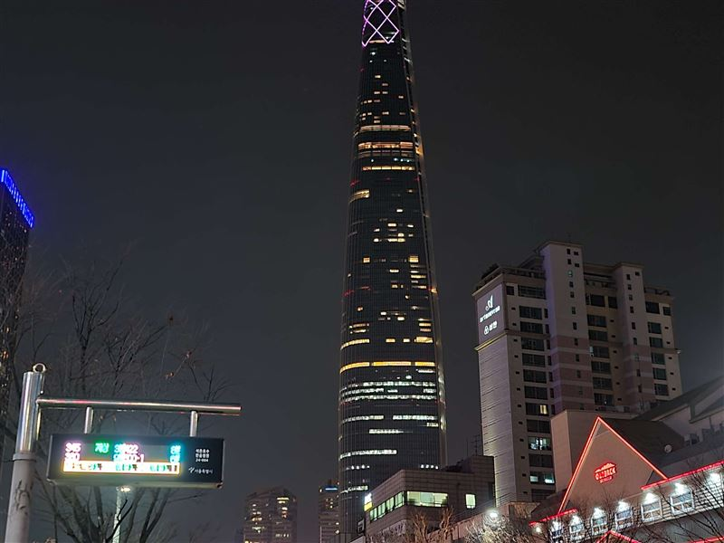
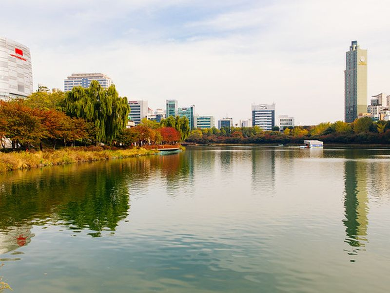
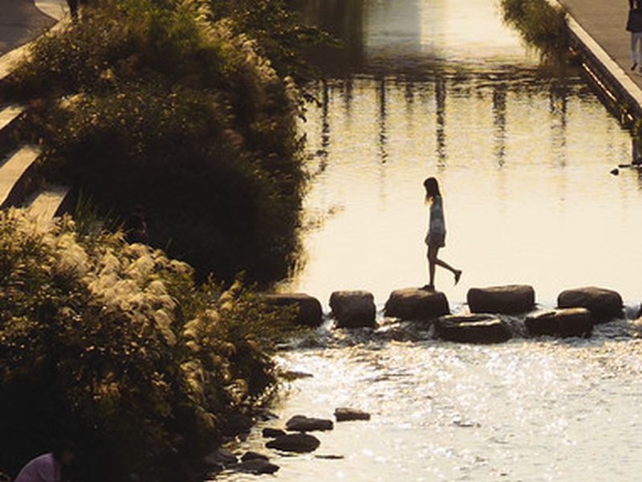

Explore Seoul
A Brief History
Seoul has served as Korea's capital in different forms for more than six centuries, beginning with the Joseon dynasty's founding city of Hanyang in 1394. Royal palaces, gates, government avenues, and later occupation-era and postwar reconstruction shaped the urban core. Today's city combines restored historical districts with transport corridors, riverside public space, and high-rise development.
Attractions Map
Top Sights & Activities

Gyeongbokgung Palace
Gyeongbokgung was founded in 1395 as the main royal palace of the Joseon dynasty. It was burned during the Imjin War, rebuilt in the 19th century, and later altered under Japanese rule. Ongoing restoration has returned major halls, gates, and courtyards to public use.

Gwanghwamun Gate
Gwanghwamun is the main south gate of Gyeongbokgung. First completed in the late 14th century, it was destroyed and rebuilt several times, including a modern restoration completed in 2010. The gate forms the ceremonial threshold between the palace and the central boulevard.

Statue of King Sejong the Great
The statue of King Sejong stands in Gwanghwamun Square and commemorates the 15th-century ruler associated with the creation of Hangul and many scientific and administrative reforms. The monument and its underground exhibition spaces connect public history with one of Seoul's main civic axes.

National Museum of Korea
The National Museum of Korea moved to Yongsan in 2005 and holds major collections of Korean archaeology, Buddhist art, painting, calligraphy, and royal objects. The institution traces its roots to the Korean Empire period and now serves as the country's main national museum.

N Seoul Tower
N Seoul Tower opened to the public in 1980 on Namsan and combines a communications tower with observation and dining levels. It became a city landmark for panoramic views over Seoul and for the public spaces and trails that connect the tower to Namsan Park.

Lotte World Tower
Lotte World Tower opened in 2017 in Songpa District and rises 555 metres over the Jamsil area. The tower combines offices, hotel, retail, and observation levels, and its Seoul Sky observatory became a key viewpoint in the southeastern part of the capital.

Seokchon Lake
Seokchon Lake is a divided urban lake beside the Lotte World complex in Jamsil. The waterside paths and seasonal cherry blossoms made it a popular public recreation area and event space in southeastern Seoul, especially after broader redevelopment of the district.

Cheonggyecheon
Cheonggyecheon is a restored stream corridor through central Seoul reopened in 2005 after the removal of an elevated highway. The project reintroduced water, bridges, paths, and public art into a historic east-west route that had long been covered during rapid urban development.